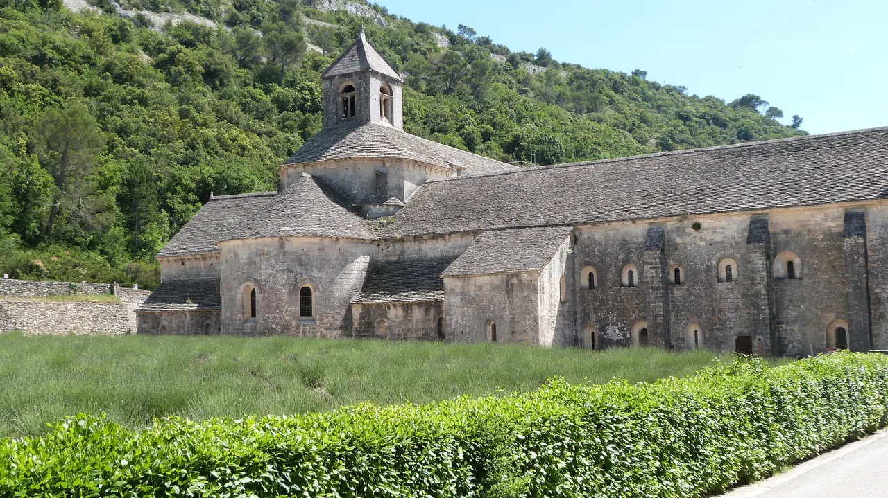

Abbaye de Sénanque

| 지역 | Luberon |
|---|---|
| 등급 | Recommended |
| 언제 | 일정에 배정된 날을 시간표에서 찾지 못했다 |
| 상세 | 챕터 본문에서 보기 |
참고
오프라인입니다. 위키백과와 지도 링크는 연결되면 다시 동작합니다.
무엇인가 — 부패에 대한 반작용으로 태어난 건축
1148년에 세워졌다. 문명에서 멀리 떨어진 외딴 곳에서 소박하게 살고자 한 소수의 수도사들이 창설했다.
그 전 두 세기 동안 수도원은 베네딕토회 아래 있었고 프랑스 전역에 수백 개가 있었다. 그런데 시간이 지나며 매우 부유해지고 부패해, 원래의 이상이던 청빈과 노동의 모범에서 멀어졌다. 부르고뉴의 한 수도사 시토의 베르나르가 베네딕토회에서 갈라져 나와 더 단순하고 겸손한 수도원을 만들기로 했다. 이것이 시토회다.
토로네·실바칸·세낭크는 프로방스의 세 시토회 자매로 불린다. 셋 다 성 베네딕토가 정한 규칙에 따라 지어졌다. 건축은 수도사의 주의를 흩뜨리지 않도록 엄격하고 헐벗었으며, 불필요하게 밖으로 나가지 않아도 되게끔 수도 생활에 필요한 모든 것을 갖춰야 했다.
핵심 — 장식이 없는 것이 설계다
이 건물에는 조각도 스테인드글라스도 거의 없다. 빠뜨린 것이 아니라 금지한 것이다.
Day 13에 본 엑상의 바로크 저택, Day 2의 사그라다 파밀리아와 정반대 축에 있다. 같은 기독교 건축인데 장식에 대한 태도가 정면으로 갈린다.
지금도 수도원이다
아르데슈에서 온 시토회 수도사들이 카바용 주교의 발의로 1148년에 세웠다. 1150년 기랑 드 시미안이 준 길이 1km, 폭 300m의 좁은 계곡에 자리 잡았다. 수도 생활에 필요한 모든 것이 있었다 — 건축용 돌과 나무, 경작지, 목초지, 그리고 계곡에 이름을 준 세낭콜 개울. 완공은 1220년이다.
종교전쟁 때 평수사 숙소가 파괴되고 위그노에게 약탈당했다. 1903–1926년에는 공동체가 추방돼 칸 인근 생토노라 섬의 레랭 수도원으로 옮겼다. 1988년에 작은 공동체가 돌아왔다.
수도사들의 하루는 성당에서 하루 일곱 번 드리는 기도와 노동으로 나뉜다. 시토회의 생활은 지금도 매우 혹독하다 — 첫 기도가 새벽 4시 30분이고, 휴식은 7시간을 넘지 않으며, 식사는 침묵 속에서 검소하게 한다.
관람 규칙 수도 생활이 이어지는 곳이므로 단정한 복장이 요구된다. 수도사들이 주 몇 차례 가이드 투어를 제공하는데 프랑스어로 1시간이고 정원이 제한된다. 회랑·성당·참사회실·기숙사·난방실을 돈다. 투어는 기도의 장소라는 수도원의 성격에 맞게 종교적 성격을 띤다 — 단정한 복장, 침묵.
⚠ 9월에는 라벤더가 없다 여름에는 라벤더 밭이 수도원 특유의 정취를 만든다. 9월 15일에는 이미 수확이 끝났다. 방문 경험은 계절에 따라 크게 다르다. 여름에는 라벤더 밭 너머의 조망을 보러 온 인파로 붐비고, 봄·가을에는 훨씬 조용해서 실제로 일하는 수도원에 더 맞지만 라벤더는 없다. 이것이 오히려 유리하다. 라벤더보다 수도원과 계곡이 이 방문의 목적이다. 사진을 찍으러 오는 사람이 빠진 조용한 수도원을 본다.
실용
| 항목 | 값 |
|---|---|
| 자유 관람 | 월–토 10:00–11:00 및 13:00–16:00, 일 13:45–16:00 재확인 |
| 가이드 투어 | 프랑스어 1시간 · 정원 제한 · 주 몇 회 |
| 보조 | 히스토패드(디지털 태블릿) 제공. 1230년 수도사의 생활을 재현하며 한국어는 지원 언어에 없다 |
| 상점 | 수도사들이 만든 꿀·올리브유·라벤더 에센셜 오일 |
| 복장 | 단정한 복장 필수 |
자유 관람 시간이 매우 좁다. 오전 1시간, 오후 3시간뿐이다. 고르드 시장(8–13시)과 겹치므로 동선 순서를 반드시 정해 두라.
기존 전일 농가생활에서 보존한 선택 모듈이다. 전일 휴식일은 삭제했고, 9/14 또는 9/15 오후의 선택마을을 빼는 대신 사용할 수 있다.